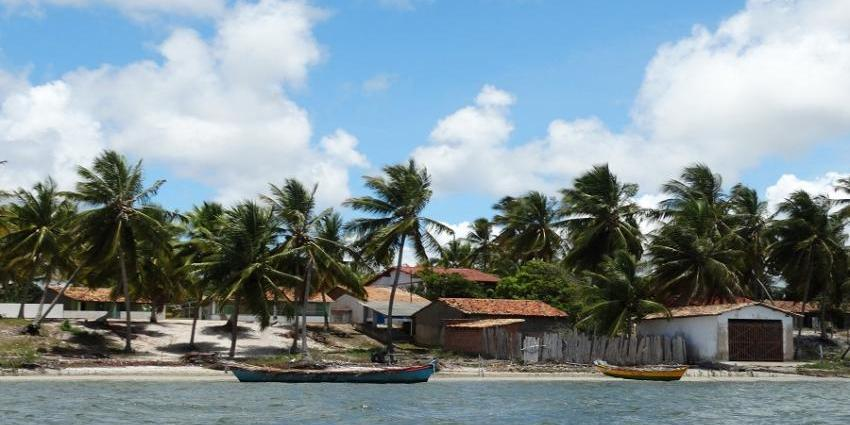

Indiaroba
História
Seu Povoado, Pontal, foi “palco” juntamente com Mangue Seco, povoado de Jandaíra, município ao norte da Bahia que faz divisão de boa parte do território com Indiaroba, do famoso romance Tieta do Agreste, do renomado escritor Jorge Amado. Em sua monografia Festa do Divino Espírito Santo, padroeiro de Indiaroba, a Profª. Maria Francisca dos Anjos, da UFS (2001:10), comenta que por muito tempo a tarefa de esclarecer a origem da cidade tem sido realizada com dificuldade por muitos pesquisadores e historiadores. Isto está conexo à insuficiência de fontes que sirvam de elementos necessários para pesquisas sobre o pequeno município, estorvando assim construir sua história. Ainda, Anjos (2001:11) cita o padre Fernando A. Soares (1986: 68), que já observava no livro A vivência do Divino na tradição de um povo, a carência de dados encontrados, principalmente em documentos concernentes às datas do processo que define a ascensão do município às categorias de freguesia, vila e cidade. Indiaroba fica entre os rios Sergipe ao norte e Real ao sul que hoje forma o município. Foi antigamente, por quase um século, um território alvo de disputas de comarca, entre os municípios de Abadia ao lado da Província da Bahia e Santa Luzia do Rio Real (hoje Santa Luzia do Itanhi) do lado de Sergipe. Essas primeiras disputas se prolongaram até pouco depois da criação de Abadia instalada pelo ouvidor de Sergipe em 1728. Outras questões foram debatidas até Indiaroba pertencer a Sergipe como mencionaremos adiante. Os franceses que desde 1575 excursionaram pelo rio Real, com a ajuda dos indígenas, não deixaram resquícios de sua passagem por aquelas terras, mas documentos confirmam que foram os primeiros povos etnicamente brancos a aportarem na região, onde, com auxílio dos nativos, contrabandeavam madeira e outras riquezas naturais. A conquista de Sergipe, por Cristóvão de Barros, em 1590, foi o marco também da divisão em relação às primeiras sesmarias da região, precisamente em 1596, quando se estabeleceram diversas colônias com suas fazendas de gado. Em 1750, segundo Góes (2002: 100), padres jesuítas que vinham de Santa Luzia através do rio Sagüim, fundaram um hospício e a capela de Nossa Senhora do Carmo, hoje povoado Convento. A povoação era denominada Feira da Ilha por causa de comerciantes que traziam produtos da Abadia (Bahia). Posteriormente, o nome foi alterado para Terra do Divino Espírito Santo. O historiador Luis Soutelo (2000: 44) comenta que em 1787 as lutas no território Bahia-Sergipe se intensificam em virtude das rivalidades entre capitães-mores José de Oliveira Campos de Abadia (hoje Cachoeira de Abadia-Ba) e Manoel Francisco da Cruz e Lima, de Santa Luzia do Rio Real-Se. Esses dados sobre o passado distante de Indiaroba podem ainda ser comprovados na leitura de determinados documentos, que tratam da história de Sergipe até o século XIX. Hoje, a produção do município é tanto da pecuária quanto da lavoura de cana-de-açúcar e o algodão. Atualmente é comum encontrar fazendas da região instalando tanques para o cultivo de camarão, fundamental na culinária local e utilizado para exportação comercial. Para o historiador Clodomir Silva (1920: 193), citado em Anjos (2001:12), entende-se que o limite geográfico passou por alteração de caráter religioso, político-administrativo e que nos favorece uma compreensão da cidade de Indiaroba nos dias atuais. Ainda sobre o assunto, Clodomir Silva, conceitua estas questões políticas e administrativas que estavam envolvidas na sua história. Cita: A lei de 31 de janeiro de 1845 declarou que ficava em lugar o artigo da lei de 6 de março de 1841 que elevou a capela do povoado do Espírito Santo à Freguesia, a qual fica pertencendo ao município de Santa Luzia. (Clodomir Silva, apud Anjos, 2001: 12).
Na mesma monografia (2001: 14), encontramos relatos sobre a atual vila do Espírito Santo, que teve sua capela erguida a freguesia pela Lei no 65 de 6 de março de 1841. Conforme documentação passa-se a concepção de categorias de Villa à Freguesia do Espírito Santo. Tal trabalho relata que: Art. 1o – Fica sem efeito o art. 2o da Lei no 162 de 20 de março de 1846, em pleno vigor a concepção da categoria Villa à Freguesia do Espírito Santo. Art. 2o – O governo da província providenciará para que na próxima época das eleições se proceda a eleição da respectiva Câmara Municipal, para ter lugar então a instalação da mesma Villa. Art. 3o – Ficarão revogadas as disposições em contrário. Paço da Assembleia Legislativa Provincial de Sergipe aos 24 de maio de 1848. (idem, 2001: 15)
No século seguinte, precisamente em 28 de março de 1938, Indiaroba inicia uma nova etapa com a emancipação política, sendo o Sr. Antônio Ramos da Silva, o primeiro Prefeito do município. Atualmente, a expansão turística do litoral da Bahia até Sergipe, com os complexos hoteleiros existentes e a abertura da Linha Verde tornou Indiaroba porta de entrada do Estado sergipano.
fonte: https://indiaroba.se.gov.br/historia-da-cidade/Pontos Turísticos
Pontal de Indiaroba
Sabe aqueles lugares que fazem você se desligar completamente da “ansiosa” realidade que aflige grande parte dos cidadãos “urbanos” hoje em dia? O Pontal, povoado do município de Indiaroba, no litoral Sul de Sergipe, é um destes. Navegando pelo rio Real e contemplando a belíssima paisagem do seu estuário, se consegue esquecer quase que completamente da maioria das preocupações, num verdadeiro reencontro com a natureza.
Terra Caída
A rusticidade e a pouca infraestrutura não são empecilhos para se conhecer um dos destinos mais agradáveis e bonitos do litoral Sul de Sergipe. As paisagens bucólicas à beira-rio dão o tom do passeio, com locais bons para pesca e rios balneáveis e aptos para um passeio entre manguezais.
Dados Gerais de acordo com o IBGE
| Prefeito (a) | Adinaldo do Nascimento Santos |
| Vice-Prefeito (a) | Adílio Cardoso Lima da Paixão |
| Site do município | https://indiaroba.se.gov.br/ |
| Área territorial | 316,316 km² |
| População estimada | 18.337 pessoas |
| Densidade demográfica | 50,49 hab/km² |
| IDHM | 0,580 |
| PIB per capita | R$ 10.763,45 |